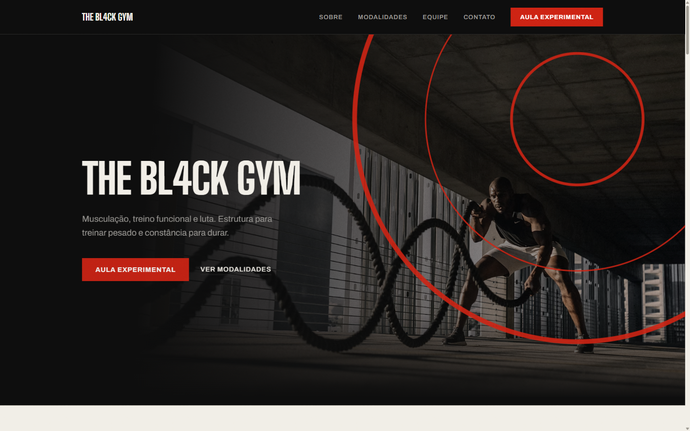
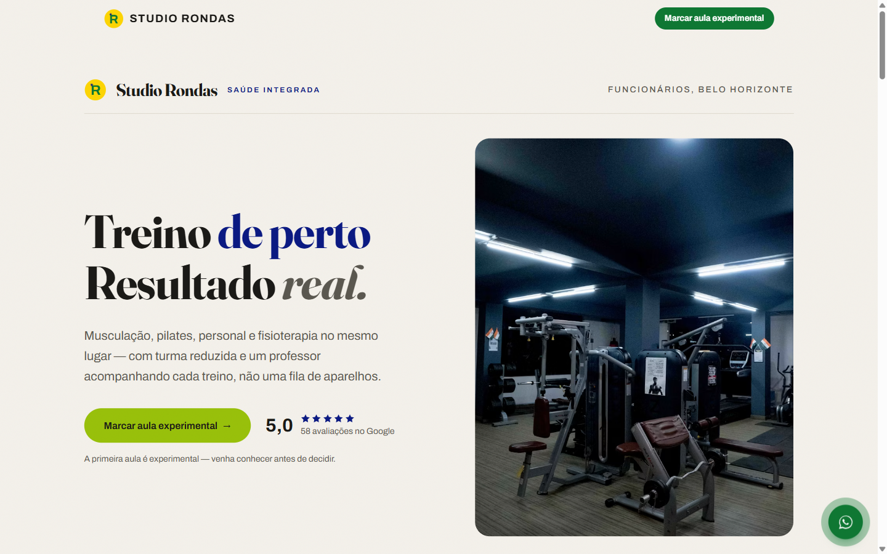
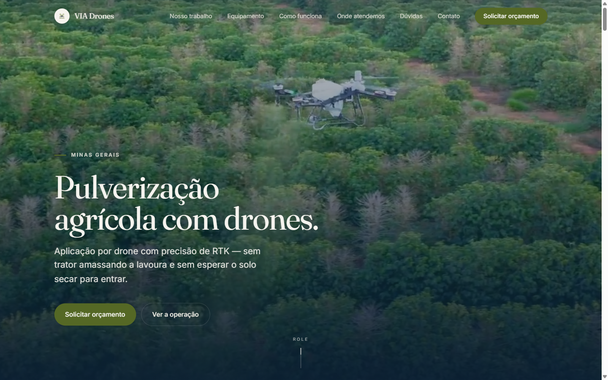

<!doctype html>
<html lang="pt-BR">
<head>
<meta charset="utf-8">
<title>iD — artes do Instagram</title>

<!-- As MESMAS fontes e os MESMOS tokens do site. Nada aqui e recriado:
     se a marca mudar em assets/theme.css, as artes mudam junto. -->
<link rel="stylesheet" href="../../node_modules/@fontsource-variable/archivo/wdth.css">
<link rel="stylesheet" href="../../node_modules/@fontsource-variable/instrument-sans/index.css">
<link rel="stylesheet" href="../../node_modules/@fontsource-variable/jetbrains-mono/index.css">
<link rel="stylesheet" href="../../assets/theme.css">

<style>
  *, *::before, *::after { box-sizing: border-box; border-radius: 0; margin: 0; padding: 0; }

  body {
    background: #6b6b6b;
    display: flex; flex-wrap: wrap; gap: 40px; padding: 40px;
    font-family: 'Instrument Sans Variable', sans-serif;
  }

  /* ── o quadro ──────────────────────────────────────────────────────────
     1080x1350 e a resolucao que o Instagram serve em 4:5 sem reamostrar. */
  .slide {
    width: 1080px; height: 1350px; flex: none;
    position: relative; overflow: hidden;
    display: flex; flex-direction: column; justify-content: space-between;
    padding: 84px;
    background: var(--papel); color: var(--tinta);
  }
  .capa1x1 { width: 1080px; height: 1080px; }

  /* Rotulo e conteudo formam um bloco so, ancorado embaixo — do mesmo jeito
     que o site pareia rotulo + H2. O ar todo fica em cima, de proposito. */
  /* 200 e nao 96: a miniatura da grade corta o 4:5 num 1:1 pelo centro.
     Com folga menor o titulo cai perto da borda do corte e some do grid. */
  .bloco { margin-top: auto; margin-bottom: 200px; display: flex;
           flex-direction: column; gap: 44px; }

  /* chapa escura: mesma inversao de tokens do site (.chapa-tinta) */
  .tinta {
    background: #14130F; color: #F2EFE7;
    --papel: #14130F; --tinta: #F2EFE7; --tinta-media: #A5A196;
    --linha: #33302A; --azul: #7B90FF;
  }

  /* ── tipografia, escalada para 1080 de largura ─────────────────────── */
  .display {
    font-family: 'Archivo Variable', 'Arial Black', sans-serif;
    font-variation-settings: 'wdth' 118, 'wght' 800;
    letter-spacing: -0.035em; line-height: 0.95; padding-bottom: 0.06em;
  }
  .xl { font-size: 130px; }
  .l  { font-size: 100px; }
  .m  { font-size: 74px; }
  .s  { font-size: 54px; }

  .rotulo {
    font-family: 'JetBrains Mono Variable', monospace;
    font-size: 21px; letter-spacing: 0.16em; text-transform: uppercase;
    color: var(--tinta-media);
  }
  .corpo  { font-size: 34px; line-height: 1.45; max-width: 24ch; }
  .mono   { font-family: 'JetBrains Mono Variable', monospace; font-size: 26px; }

  .azul     { color: var(--azul); }
  .vermelho { color: #FF3B14; }
  .media    { color: var(--tinta-media); }

  /* A regua vermelha e o elemento que amarra a grade inteira: aparece na
     mesma familia de posicao em toda arte. Nao confundir com o elo do
     logotipo — aquele so existe em movimento e nunca entra numa arte parada. */
  .regua { height: 10px; background: #FF3B14; }

  .pilha   { display: flex; flex-direction: column; gap: 28px; }
  .corrida { display: flex; align-items: center; gap: 28px; }

  /* ── rodape de assinatura ──────────────────────────────────────────── */
  .assina { display: flex; align-items: flex-end; justify-content: space-between; }
  .assina svg { height: 54px; display: block; }
  .arrasta {
    font-family: 'JetBrains Mono Variable', monospace;
    font-size: 21px; letter-spacing: 0.16em; text-transform: uppercase; color: #FF3B14;
  }

  /* ── listas ────────────────────────────────────────────────────────── */
  .itens { display: flex; flex-direction: column; gap: 20px; font-size: 38px; }
  .item  { position: relative; width: fit-content; padding-right: 4px; }
  .cortado::after {
    content: ''; position: absolute; left: 0; top: 50%;
    width: 100%; height: 5px; background: #FF3B14;
  }
  .inclui { display: flex; flex-direction: column; gap: 20px; font-size: 30px; }
  .inclui li { list-style: none; display: flex; gap: 20px; }
  .inclui li::before { content: '—'; color: #FF3B14; flex: none; }

  .etapa { display: flex; gap: 32px; align-items: baseline; }
  .etapa .n {
    font-family: 'JetBrains Mono Variable', monospace;
    font-size: 26px; color: #FF3B14; flex: none;
  }

  /* ── print de case ─────────────────────────────────────────────────── */
  .print {
    width: 912px; height: 558px; overflow: hidden; position: relative;
    border: 3px solid var(--tinta);
  }
  /* o print tem 1440x900 com ~16px de barra de rolagem a direita: a largura
     renderizada compensa isso para a barra cair fora do quadro. */
  .print img { position: absolute; left: 0; top: 0; width: 922.2px; display: block; }

  /* capa de destaque: tudo bem dentro do circulo que o app recorta */
  .capa-destaque {
    height: 100%; display: flex; flex-direction: column;
    align-items: center; justify-content: center; gap: 40px;
  }

  /* etiqueta de folha de contato — nao entra na arte, so no HTML */
  .etiqueta {
    position: absolute; top: -34px; left: 0;
    font: 13px/1 monospace; color: #fff; letter-spacing: .08em;
  }
  .quadro { position: relative; }
</style>
</head>
<body>
<script>
/* Marca iD — mesma geometria de docs/brand-guidelines.md §2 e de Marca.tsx.
   Nunca redesenhar a mao: alterar la e refletir aqui. */
const marca = (claro) => `
  <svg viewBox="0 0 134 100" xmlns="http://www.w3.org/2000/svg" role="img" aria-label="iD">
    <circle cx="11" cy="11" r="11" fill="${claro ? '#7B90FF' : '#1B3BFF'}"/>
    <path d="M11 32V100" stroke="${claro ? '#7B90FF' : '#1B3BFF'}" stroke-width="22" fill="none"/>
    <g fill="none" stroke="${claro ? '#F2EFE7' : '#14130F'}" stroke-width="22">
      <path d="M55 0V100"/><path d="M55 11H83A39 39 0 0 1 83 89H55"/>
    </g>
  </svg>`;

const ARROBA = '@idsolucoes.bh';

const assina = (escuro, arrasta) => `
  <div class="assina">
    <div class="corrida">
      ${marca(escuro)}
      <span class="mono media">${ARROBA}</span>
    </div>
    ${arrasta ? '<span class="arrasta">arrasta &rarr;</span>' : ''}
  </div>`;

/* Sinais das capas de destaque. As setas sao desenhadas e nao tipografadas:
   Archivo nao tem esses glifos, o navegador cai num fallback fino e a capa
   sai com metade do peso das outras. Traco 52 iguala o peso do display, e a
   terminacao e reta como manda o guia. */
const glifo = (t) => `<span class="display" style="font-size:330px">${t}</span>`;
const seta = (haste, ponta) => `
  <svg viewBox="0 0 240 240" style="width:470px;height:470px" aria-hidden="true">
    <g fill="none" stroke="currentColor" stroke-width="52">
      <path d="${haste}"/><path d="${ponta}"/>
    </g>
  </svg>`;

/* Cada slide: { id, escuro?, quadrado?, rotulo, corpo, arrasta? } */
const slides = [

/* ══ POST 1 — abertura ══════════════════════════════════════════════ */
{ id: 'p1-1', escuro: true, arrasta: true,
  rotulo: 'Estúdio de identidade digital · Belo Horizonte',
  corpo: `
    <div class="pilha">
      <div class="display xl">Seu site</div>
      <div class="corrida"><div class="regua" style="width:420px"></div></div>
      <div class="display xl">em 5 dias</div>
      <p class="corpo media" style="margin-top:36px">
        A gente abriu esse perfil pra fazer uma coisa só.
      </p>
    </div>` },

{ id: 'p1-2', rotulo: 'Quem faz', arrasta: true, corpo: `
    <div class="pilha">
      <div class="display m">Somos dois desenvolvedores.</div>
      <div class="regua" style="width:300px"></div>
      <p class="corpo">
        Não tem equipe de atendimento no meio do caminho.
        Você fala direto com quem escreve o código do seu site.
      </p>
    </div>` },

{ id: 'p1-3', rotulo: 'Preço e prazo', corpo: `
    <div class="pilha">
      <div class="display xl">R$ 300</div>
      <div class="display xl vermelho">5 dias</div>
      <div class="regua" style="width:520px"></div>
      <p class="corpo">
        Preço fechado, dito antes de começar.
        Sem contrato e sem mensalidade.
      </p>
      <p class="mono azul">Chama no zap — link na bio.</p>
    </div>` },

/* ══ POST 2 — “Só tenho Instagram.” ═════════════════════════════════ */
{ id: 'p2-1', rotulo: 'O que a gente mais escuta', arrasta: true, corpo: `
    <div class="pilha">
      <div class="display xl">“Só tenho Instagram.”</div>
      <div class="regua" style="width:360px"></div>
    </div>` },

{ id: 'p2-2', escuro: true, rotulo: 'E aí acontece isso', arrasta: true, corpo: `
    <div class="pilha">
      <div class="display m">
        O cliente ouve seu nome, pesquisa no Google e não acha nada.
      </div>
      <div class="regua" style="width:260px"></div>
      <p class="corpo media">
        Ele não te acha errado. Ele simplesmente não te acha.
      </p>
    </div>` },

{ id: 'p2-3', rotulo: 'A diferença', corpo: `
    <div class="pilha">
      <div class="display m">Instagram é onde te acham.</div>
      <div class="display m vermelho">Site é onde te contratam.</div>
      <div class="regua" style="width:440px"></div>
      <p class="mono">R$ 300 · no ar em 5 dias · só BH</p>
    </div>` },

/* ══ POST 3 — preço ═════════════════════════════════════════════════ */
{ id: 'p3-1', escuro: true, rotulo: 'Preço', arrasta: true, corpo: `
    <div class="pilha">
      <div class="display l">Nosso preço tá aqui do lado.</div>
      <div class="regua" style="width:340px"></div>
      <p class="corpo media">
        Não é “sob consulta”, não é “depende”, não é “vamos conversar”.
      </p>
    </div>` },

{ id: 'p3-2', rotulo: 'Pacote 1 · Página única', arrasta: true, corpo: `
    <div class="pilha">
      <div class="display xl">R$ 300</div>
      <div class="regua" style="width:280px"></div>
      <p class="corpo">Para existir no Google e ter para onde mandar o cliente.</p>
      <ul class="inclui">
        <li>Uma página com tudo que importa</li>
        <li>Botão de WhatsApp</li>
        <li>Aparece no Google</li>
        <li>Funciona no celular</li>
        <li>Domínio configurado</li>
      </ul>
    </div>` },

{ id: 'p3-3', rotulo: 'Pacote 2 · Página + identidade', corpo: `
    <div class="pilha">
      <div class="display xl">R$ 500</div>
      <div class="regua" style="width:280px"></div>
      <p class="corpo">Para quem ainda não tem marca — ou tem uma que não representa mais o negócio.</p>
      <ul class="inclui">
        <li>Tudo da página única</li>
        <li>Logotipo</li>
        <li>Paleta e tipografia</li>
        <li>Arquivos para redes e impressão</li>
        <li>Guia de uso da marca</li>
      </ul>
    </div>` },

/* ══ POST 4 — o que a gente cortou ══════════════════════════════════ */
{ id: 'p4-1', escuro: true, rotulo: 'O que a gente cortou', arrasta: true, corpo: `
    <div class="pilha">
      <div class="display l">Agência: 10 etapas antes do site existir.</div>
      <div class="regua" style="width:300px"></div>
    </div>` },

{ id: 'p4-2', escuro: true, arrasta: true, rotulo: 'Agência tradicional', corpo: `
    <div class="itens">
      <span class="item cortado">Formulário de briefing</span>
      <span class="item cortado">Reunião de alinhamento</span>
      <span class="item cortado">Proposta comercial</span>
      <span class="item cortado">Reunião para revisar a proposta</span>
      <span class="item cortado">Aprovação de escopo</span>
      <span class="item cortado">Contrato</span>
      <span class="item cortado">Reunião de kickoff</span>
      <span class="item cortado">Desenvolvimento</span>
      <span class="item cortado">Rodada de ajustes</span>
      <span class="item cortado">Mais uma rodada de ajustes</span>
    </div>` },

{ id: 'p4-3', rotulo: 'Aqui', corpo: `
    <div class="pilha">
      <div class="display m">Aqui são três.</div>
      <div class="regua" style="width:240px"></div>
      <div class="pilha" style="gap:20px;margin-top:12px">
        <div class="etapa"><span class="n">01</span><span class="display s">Você chama no WhatsApp</span></div>
        <div class="etapa"><span class="n">02</span><span class="display s">A gente faz</span></div>
        <div class="etapa"><span class="n">03</span><span class="display s">Seu site entra no ar</span></div>
      </div>
    </div>` },

/* ══ POST 5 — case BL4CK GYM ════════════════════════════════════════ */
{ id: 'p5-1', rotulo: 'Trabalho · Academia · Belo Horizonte', arrasta: true, corpo: `
    <div class="pilha">
      <div class="print"></div>
      <div class="display m">THE BL4CK GYM</div>
      <div class="regua" style="width:220px"></div>
    </div>` },

{ id: 'p5-2', rotulo: 'O que a gente fez', corpo: `
    <div class="pilha">
      <div class="display s">Site institucional com as modalidades da academia e a aula experimental como chamada principal.</div>
      <div class="regua" style="width:220px"></div>
      <p class="mono azul">bl4ck-gym.vercel.app</p>
      <p class="corpo media">No ar. É só abrir e ver.</p>
    </div>` },

/* ══ POST 6 — case Studio Rondas ════════════════════════════════════ */
{ id: 'p6-1', rotulo: 'Trabalho · Saúde integrada · Funcionários, BH', arrasta: true, corpo: `
    <div class="pilha">
      <div class="print"></div>
      <div class="display m">Studio Rondas</div>
      <div class="regua" style="width:220px"></div>
    </div>` },

{ id: 'p6-2', rotulo: 'O que a gente fez', corpo: `
    <div class="pilha">
      <div class="display s">Site com as quatro modalidades, o endereço e a aula experimental marcada pelo WhatsApp.</div>
      <div class="regua" style="width:220px"></div>
      <p class="mono azul">studio-rondas.vercel.app</p>
      <p class="corpo media">No ar. É só abrir e ver.</p>
    </div>` },

/* ══ POST 7 — case VIA Drones ═══════════════════════════════════════ */
{ id: 'p7-1', rotulo: 'Trabalho · Pulverização agrícola · Medeiros, MG', arrasta: true, corpo: `
    <div class="pilha">
      <div class="print"></div>
      <div class="display m">VIA Drones</div>
      <div class="regua" style="width:220px"></div>
    </div>` },

{ id: 'p7-2', rotulo: 'O que a gente fez', corpo: `
    <div class="pilha">
      <div class="display s">A operação explicada passo a passo, a ficha técnica do drone e o orçamento caindo direto no WhatsApp.</div>
      <div class="regua" style="width:220px"></div>
      <p class="mono azul">viadronesmarcel.vercel.app</p>
      <p class="corpo media">No ar. É só abrir e ver.</p>
    </div>` },

/* ══ POST 8 — a dupla ═══════════════════════════════════════════════ */
{ id: 'p8-1', escuro: true, rotulo: 'Quem tá do outro lado', arrasta: true, corpo: `
    <div class="pilha">
      <div class="display l">Somos dois.</div>
      <div class="regua" style="width:280px"></div>
      <div class="display m">Você fala com quem escreve o código.</div>
    </div>` },

{ id: 'p8-2', rotulo: 'A dupla', corpo: `
    <div class="pilha" style="gap:56px">
      <div class="pilha" style="gap:12px">
        <div class="display m">Arthur <span class="media">Nametala</span></div>
        <p class="mono media">front-end, produto e interface</p>
      </div>
      <div class="regua" style="width:100%"></div>
      <div class="pilha" style="gap:12px">
        <div class="display m">Gustavo <span class="media">Vieira</span></div>
        <p class="mono media">back-end, integrações e qualidade</p>
      </div>
      <p class="corpo">Sem camada de atendimento. O WhatsApp que você chama é o nosso.</p>
    </div>` },

/* ══ POST 9 — como funciona ═════════════════════════════════════════ */
{ id: 'p9-1', rotulo: 'Como funciona', arrasta: true, corpo: `
    <div class="pilha">
      <div class="display xl">Do primeiro zap ao site no ar.</div>
      <div class="regua" style="width:380px"></div>
      <p class="mono">4 passos · 5 dias</p>
    </div>` },

{ id: 'p9-2', rotulo: 'Passo 01 e 02', arrasta: true, corpo: `
    <div class="pilha" style="gap:60px">
      <div class="pilha" style="gap:16px">
        <span class="mono vermelho">01</span>
        <div class="display m">Você conta o que faz</div>
        <p class="corpo media">Uma conversa no WhatsApp. Sem briefing de vinte páginas, sem reunião de duas horas.</p>
      </div>
      <div class="regua" style="width:100%"></div>
      <div class="pilha" style="gap:16px">
        <span class="mono vermelho">02</span>
        <div class="display m">A gente transforma isso em identidade</div>
        <p class="corpo media">Marca, texto, estrutura e o site inteiro. Você não precisa trazer nada pronto.</p>
      </div>
    </div>` },

{ id: 'p9-3', rotulo: 'Passo 03 e 04', arrasta: true, corpo: `
    <div class="pilha" style="gap:60px">
      <div class="pilha" style="gap:16px">
        <span class="mono vermelho">03</span>
        <div class="display m">Você aprova</div>
        <p class="corpo media">Vê no ar, num link, antes de qualquer coisa ficar definitiva. Ajuste é conversa, não retrabalho cobrado.</p>
      </div>
      <div class="regua" style="width:100%"></div>
      <div class="pilha" style="gap:16px">
        <span class="mono vermelho">04</span>
        <div class="display m">Seu site entra no ar</div>
        <p class="corpo media">Domínio configurado, no Google, com botão de WhatsApp funcionando. Em 5 dias.</p>
      </div>
    </div>` },

{ id: 'p9-4', escuro: true, rotulo: 'Começa aqui', corpo: `
    <div class="pilha">
      <div class="display l">Manda uma mensagem contando o que você faz.</div>
      <div class="regua" style="width:340px"></div>
      <p class="corpo media">A gente responde com o preço e a data que seu site entra no ar. Sem reunião.</p>
      <p class="mono azul">Link na bio · ${ARROBA}</p>
    </div>` },

/* ══ capas de destaque — 1080x1080, cortadas em círculo pelo app ═════
   O circulo aparece com ~60px de diametro no perfil: palavra nenhuma
   sobrevive nesse tamanho, e o app ja escreve o nome embaixo. Entao a capa
   carrega um sinal so, enorme, e o fundo alterna para dar ritmo a fileira. */
...[
  { id: 'preco',     sinal: glifo('R$'),    escuro: true  },
  { id: 'prazo',     sinal: glifo('5d'),    escuro: false },
  { id: 'trabalhos', sinal: seta('M52 188L184 56', 'M96 56H188V148'), escuro: true },
  { id: 'dupla',     sinal: glifo('2'),     escuro: false },
  { id: 'pedir',     sinal: seta('M18 120H196', 'M126 50L200 120L126 190'), escuro: true },
].map((d) => ({ id: 'destaque-' + d.id, quadrado: true, escuro: d.escuro, capa: d.sinal })),
];

/* ── render ─────────────────────────────────────────────────────────── */
document.write(slides.map((s) => {
  const dentro = s.capa
    /* capa de destaque: tudo dentro do circulo que o app recorta */
    ? `<div class="capa-destaque">
         ${s.capa}
         <div class="regua" style="width:150px"></div>
       </div>`
    : `<div class="bloco">
         <p class="rotulo">${s.rotulo}</p>
         ${s.corpo}
       </div>
       ${assina(s.escuro, s.arrasta)}`;

  return `<div class="quadro">
      <span class="etiqueta">${s.id}</span>
      <div class="slide ${s.escuro ? 'tinta' : ''} ${s.quadrado ? 'capa1x1' : ''}"
           id="${s.id}" ${s.capa ? 'style="padding:0"' : ''}>${dentro}</div>
    </div>`;
}).join(''));

/* Marcador para o screenshot esperar as fontes: sem isso o Playwright
   fotografa no fallback e a marca sai com a tipografia errada. */
document.fonts.ready.then(() => document.documentElement.setAttribute('data-fontes', 'ok'));
</script>
</body>
</html>
